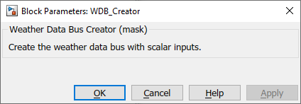

WDB_Creator
Path: CARNOT/Basic/Weather_and_Sun
Purpose:
Create a Weather Data Bus.
Description:
The block creates a constant Weather Data Bus (WDB)
and assign the names to the elements of the bus.
Input:
| TimeValueComment | : | timevalue (comment line) format YYYYMMDDHHMM Y is the year, M the month, D the day, H the hour |
| Zenith_Angle | : | zenith angle of sun (at time, not averaged) in ° continue at night with values above 90° to get time of sunrise or sunset by linear interpolation |
| Azimuth_Angle | : | azimuth angle of sun in ° (at time, not averaged) (0°=south, east negative) |
| Solar_Radiation_Beam_normal | : | direct or beam solar radiation on a normal surface in W/m2 |
| Solar_Radiation_diffuse_horizontal | : | diffuse solar radiation on horizontal surface in W/m2 |
| Temperature_Ambient | : | ambient temperature in degree Celsius |
| Temperature_Sky_Radiation | : | radiation temperature of sky in degree Celsius |
| Relative_Humidity | : | relative humidity of the air in percent [0..100] |
| Precipitation | : | precipitation or rainfall in m/s (water column per timestep) |
| Cloud_Index | : | part of the sky covered by clouds (0=no cloud, 1=covered sky) |
| Station_Pressure | : | air pressure in Pa |
| Wind_Speed | : | mean wind speed in m/s |
| Wind_Direction | : | wind direction in ° (north=0° west=270°) |
| Incidence_Angle_sun | : | incidence angle of the direct solar radiation on surface in ° (0° = vertical) |
| Incidence_Angle_longitudinal | : | incidence angle in a vertical plane on the collecor in ° the orientation of the plane is parallel to the risers, referred as longitudinal plane in EN 12975 (= -9999, if surface orientation is unknown) |
| Incidence_Angle_transversal | : | incidence angle in a vertical plane on the collecor in ° the orientation of the plane is parallel to the header, referred as transversal plane in EN 12975 (= -9999, if surface orientation is unknown) |
| Solar_Radiation_direct_surface | : | direct solar radiation on horizontal surface in W/m2 |
| Solar_Radiation_diffuse_surface | : | diffuse solar radiation on horizontal surface in W/m2 |
Output:
| WDB | : | Weather Data Bus |
Parameters and Dialog Box:

Characteristics:
| Direct Feedthrough | : | Yes |
| Sample Time | : | Inherited from driving block |
| Vectorized | : | No |